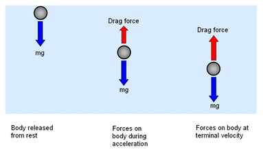
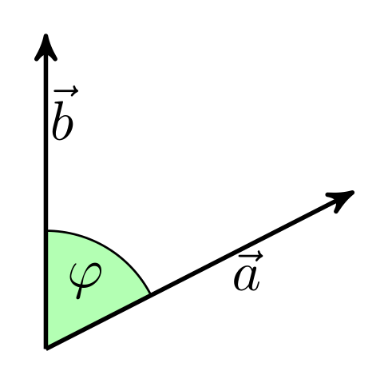

Week 1 - Notes: Introduction to Classical Mechanics#
How do we formulate Classical Mechanics?#
In the past, you have learned about Newton’s Laws of Motion. These laws are the foundation of classical mechanics. They are used to describe the motion of objects in the universe. In this course, we will use these laws to describe the motion of particles and rigid bodies. As we progress, we will learn other formulations of classical mechanics, such as the Lagrangian and Hamiltonian reformulations.
Newton’s Laws of Motion are a vector formulation of classical mechanics. The laws are as follows:
First Law: An object at rest will remain at rest, and an object in motion will remain in motion at a constant velocity unless acted upon by an external force.
Second Law: The acceleration of an object is directly proportional to the net force acting on it and inversely proportional to its mass. The direction of the acceleration is in the direction of the net force.
Third Law: For every action, there is an equal and opposite reaction.
These are the classic laws of motion that you have learned in other courses. How we formulate these laws mathematically is the subject of this course.
Newton’s Second Law#
Newton’s Second Law provides the mathematical foundation for classical mechanics. It provides a vector relationship between the net force acting on an object and its acceleration. The law is given by the equation:
$$\vec{F}_{net} = m\vec{a}$$
where $\vec{F}_{net}$ is the net force acting on the object, $m$ is the mass of the object, and $\vec{a}$ is the acceleration of the object. This equation is a vector equation, meaning that it must be satisfied in each direction.
$$\begin{aligned} F_{net,x} &= m a_x \ F_{net,y} &= m a_y \ F_{net,z} &= m a_z \end{aligned}$$
Each push in a Cartesian direction results in a proportional response – an acceleration in the same direction of the net push. Let’s go through a common example to illustrate this relationship.
Example: A Block on an Inclined Ramp#
Consider the box (mass, $m$) above on an inclined ramp (angle, $\theta$). The box is at rest subject to static friction, $\mu_s$. What angle of inclination will cause the box to start sliding down the ramp?
We start by drawing the Free Body Diagram (FBD) of the box.

{kind=link}
The FBD is a diagram that shows all the forces acting on the object. In this case, the forces acting on the box are:
The force of gravity, $mg$, acting downwards.
The force due to the ramp, which is both perpendicular to the ramp surface (normal) and parallel to it (friction).
We tilt our coordinate system to align with the ramp. This makes the normal force, $N$, act in the $y$-direction and the frictional force, $f$, act in the $x$-direction. The force of gravity is split into two components: $mg\sin(\theta)$ and $mg\cos(\theta)$.
The net force acting on the box is the sum of the forces acting on it, and is zero up to the point where the box starts sliding. At this point, the frictional force is at its maximum value, $\mu_s N$. Taking the sum of the forces acting on the box in each direction we have:
$$\vec{F}{net} = \vec{f} + \vec{N} + \vec{F}{gravity} = 0$$
$$\sum F_{x,i} = f - mg\sin(\theta) = 0$$ $$\sum F_{y,i} = N - mg\cos(\theta) = 0$$
Thus,
$$f = mg\sin(\theta)$$ $$N = mg\cos(\theta)$$
At the point where the box starts sliding, the frictional force is at its maximum value, $\mu_s N$. Thus, the box starts sliding when:
$$f = \mu_s N$$
Substituting the expressions for $f$ and $N$ into the equation above, we have:
$$mg\sin(\theta) = \mu_s mg\cos(\theta)$$
Solving for $\theta$:
$$\tan(\theta) = \mu_s$$ $$\theta = \tan^{-1}(\mu_s)$$
Thus, the box starts sliding when the angle of inclination is equal to the arctangent of the coefficient of static friction.
Check
We can check this with some numbers. Steel as a static friction coefficient of about 0.16, and rubber is closer to 0.8. Thus, the angle of inclinations for steel and rubber are:
$$\theta_{steel} = \tan^{-1}(0.16) \approx 9^\circ$$ $$\theta_{rubber} = \tan^{-1}(0.8) \approx 39^\circ$$
It seems quite reasonable that rubber would have a higher angle of inclination before sliding than steel.
Tip
A few things to note about this problem:
This was a static problem, such that $\vec{F}_{net} = 0$.
We rotated our coordinate system to align with the ramp. This is a common technique in classical mechanics to simplify the problem.
We still used Cartesian coordinates to solve the problem. This is because the forces could be easily decomposed in the titled coordinate system.
Let’s work an example that is dynamic, where the net force is not zero.
Example: Falling Object in One Dimension#
Consider an object of mass $m$ falling, but it is subject to air resistance. The free body diagram of the object shows that the forces acting on the object are:
The force of gravity/weight, $W=mg$, acting downwards.
The force due to air resistance, $F_{air}$, acting upwards.

Source: ibphysicsguide.weebly.com
{kind=link}
Here we have chosen positive $y$ to be the downward direction. We want to predict the motion ($a$, $v$, $y$) of the object as a function of time. This is a very common problem for classical mechanics.
Air Drag?#
First, we notice that we do not know the force due to air resistance. We do know that the force is related to the velocity of the object. So let’s start by writing the air resistance force as a function of velocity:
$$F_{air} = F(v)$$
where $F(v)$ is some function of velocity.
Taylor Series Expansion#
Because we know that the objects move slowly in classical mechanics, we can assume that the function can be expanded using a Taylor Series. In general, the Taylor Series of a function $f(x)$ about a point $a$ is given by:
$$f(x) = \sum_{n=0}^{\infty} \frac{f^{(n)}(a)}{n!}(x-a)^n$$
where $f^{(n)}(a)$ is the $n$-th derivative of $f(x)$ evaluated at $x=a$. We can write the first few terms out,
$$f(x) = f(a) + f’(a)(x-a) + \frac{f’’(a)}{2!}(x-a)^2 + \frac{f’’’(a)}{3!}(x-a)^3 + \ldots$$
Because we know that the object is moving slowly, we can expand the function $F(v)$ about $v=0$:
$$F(v) = F(0) + F’(0)v + \frac{F’’(0)}{2!}v^2 + \ldots$$
We can assume that the first term is zero, $F(0)=0$, because there is no air resistance when the object is at rest. Thus, the force due to air resistance is approximately:
$$F(v) \approx F’(0)v + \frac{F’’(0)}{2!}v^2$$
We call the first term the linear drag term and the second term the quadratic drag term. The linear drag term is proportional to the velocity of the object, and the quadratic drag term is proportional to the square of the velocity of the object. We also typically replace the evaluated derivatives with constants, $b$ and $c$ – because they are constants that depend on the object and the fluid it is moving through. And thus,
$$F_{air} \approx bv + cv^2$$
Back to Newton’s Second Law#
In the $y$-direction, the net force acting on the object is:
$$F_y = W - F_{air} = mg - bv - cv^2$$
And thus, the acceleration of the object is:
$$a = g - \frac{b}{m}v - \frac{c}{m}v^2$$
This differential equation can be written in a variety of ways. One common way is to write the equation as a second-order differential equation.
$$\frac{d^2y}{dt^2} = g - \frac{b}{m}\frac{dy}{dt} - \frac{c}{m}\left(\frac{dy}{dt}\right)^2$$
Note that this is a nonlinear differential equation (i.e., there’s a $(d^ny/dt^n)^m$ term where $m > 1$), which are notoriously difficult to solve in general. We can write it using the dot notation for derivatives (i.e., $\dot{y} = dy/dt$, $\ddot{y} = d^2y/dt^2$):
$$\ddot{y} = g - \frac{b}{m}\dot{y} - \frac{c}{m}\dot{y}^2$$
We can also use the velocity as the independent variable, $v = \dot{y}$. Both equations below are equivalent:
$$\frac{dv}{dt} = g - \frac{b}{m}v - \frac{c}{m}v^2$$ $$\dot{v} = g - \frac{b}{m}v - \frac{c}{m}v^2$$
Tip
A few things to note:
This is a dynamic one-dimensional problem, such that $\vec{F}_{net} \neq 0$.
This is a nonlinear problem, such that the acceleration is a function of the velocity of the object.
We are stuck with a differential equation that we need to solve, and don’t have a simple algebraic solution (e.g., a simple antiderivative).
How do we solve this equation to find the motion of the object as a function of time? We will come back to this, but solving differential equations is the primary tool of classical mechanics. We will learn how to solve these equations analytically and numerically in this course.
Euler Discretization#
Another useful formulation of Classical Mechanics uses discrete points in time to make approximate predictions of the motion. This is called the Euler Method. The Euler Method is a simple numerical method to solve ordinary differential equations. The method is based on the idea of approximating the derivative of a function by a finite difference.
We posit discrete time, like snapshots of the motion where a given measure of time $t_i$ exists in a discrete set of times between $t_0$ and $t_f$. That is, $t_i \in {t_0, t_1, t_2, \ldots, t_f}$. We conceive of the motion as discrete like the points in the figure below.
In this case, the points are equally spaced in time, such that $t_{i+1} - t_i = \Delta t$. This gives a simple table of the motion of the object at each time step:
time |
position |
|---|---|
$t_0$ |
$y_0$ |
$t_1$ |
$y_1$ |
$t_2$ |
$y_2$ |
$\ldots$ |
$\ldots$ |
where $y_i$ is the position of the object at time $t_i$. Here, $t_i = t_0 + i\Delta t$ – equal time spacing – and $y(t_i) = y_i$ indicates the position of the object at time $t_i$.
Predicting the Motion#
This formulation can be used to predict the motion of the object. Let’s first define the average velocity over a time step, $\Delta t$, like this:
$$v(t) = \dfrac{y(t+\Delta t) - y(t)}{\Delta t}$$
Now, we know that at time, $t_i$, the velocity is $v_i$: $v(t_i) = v_i$ If we make the time step small, $\Delta t \rightarrow 0$, then the average velocity is approximately the velocity at time $t_i$. Thus, we can write the velocity at time $t_{i}$ as:
$$v_{i} = \dfrac{y_{i+1} - y_i}{\Delta t}$$
Note If we take the limit that $\Delta t \rightarrow 0$, then the average velocity becomes the instantaneous velocity. This stems from the Fundamental Theorem of Calculus.
$$\lim_{\Delta t \rightarrow 0} \dfrac{y(t+\Delta t) - y(t)}{\Delta t} = \dfrac{dy}{dt} = \dot{y}$$
What about the acceleration? We can use the same idea to approximate the acceleration. The average acceleration is given by:
$$a(t) = \dfrac{v(t+\Delta t) - v(t)}{\Delta t}$$
And thus, the acceleration at time $t_i$ is:
$$a_i = \dfrac{v_{i+1} - v_i}{\Delta t}$$
Again, if we take the limit that $\Delta t \rightarrow 0$, then the average acceleration becomes the instantaneous acceleration:
$$\lim_{\Delta t \rightarrow 0} \dfrac{v(t+\Delta t) - v(t)}{\Delta t} = \dfrac{dv}{dt} = \dot{v}$$
Video Summary (13 minutes)#
There’s many videos covering the topic of Euler’s method. Here’s a video that covers the basics of Euler’s method and how it can be used to solve differential equations. It somewhat follows the notes above, but it’s always good to hear another perspective.
Direct Link: https://youtube.com/watch?v=_0mvWedqW7c
from IPython.display import YouTubeVideo
YouTubeVideo('_0mvWedqW7c', width=720, height=405)
Discretizing Newton’s Second Law#
We can use the Euler Method to discretize Newton’s Second Law, and this allows us to predict the motion of the object using iterative methods. These methods are well-suited for computers, and we will learn how to implement them in this course.
Let there be a 1D net force acting the x-direction on an object of mass $m$, $F(x)$. Here the force changes with position. We can discretize this force as a function of position, $F(x_i)$. The net force acting on the object is:
$$F(x_i) = F_i$$
Using Newton’s Second Law, we can write the acceleration of the object as:
$$a_i = \dfrac{F_i}{m}$$
But the definition of the average acceleration gives:
$$a_i = \dfrac{v_{i+1} - v_i}{\Delta t}$$
Or in terms of the predicted velocity, $v_{i+1}$:
$$v_{i+1} = v_i + a_i\Delta t$$
Or in terms of the net force:
$$v_{i+1} = v_i + \dfrac{F_i}{m}\Delta t$$
This is the Euler formulation for predicting the velocity of the object in the next time step – given the velocity at the current time step.
We pause here and will return to this formulation later, but this discretization is the basis for many numerical methods in classical mechanics, and we can apply it to solve the falling object problem above.
Looking Ahead#
The development of the forward Euler scheme is the basis for many numerical methods in physics, and especially in classical mechanics. The video below is a longer introduction to the Euler Method and how it can be used to solve differential equations. It’s a bit more advanced than the previous video, but it’s a good introduction to the topic. We will revisit this topic a number of times, and you will have a chance to implement these methods in Python. This video will be posted again when we cover numerical methods in more detail.
Direct Link: https://www.youtube.com/watch?v=MstPeOTCVzQ
from IPython.display import YouTubeVideo
YouTubeVideo('MstPeOTCVzQ', width=720, height=405)
Mathematical Preliminaries#
As you have noticed, much of what we do in classical mechanics involves solving differential equations. We will explore how to solve these equations in this course. But also notice that most of the work involves vector manipulation and/or decomposition. Thus, we will need to be comfortable with vectors. Below are some mathematical concepts of vectors that we will use in this course.
Vectors and Coordinates#
The figure below shows a vector in two dimensions.

The vector is defined by its magnitude, $A$, and its direction, $\theta$. The vector can be decomposed into two components, $A_x$ and $A_y$, in the $x$ and $y$ directions, respectively.
The magnitude of the vector is given by the Pythagorean theorem:
$$|\vec{A}| = A = \sqrt{A_x^2 + A_y^2}$$
The angle of the vector is given by the tangent of the angle:
$$\theta = \tan^{-1}\left(\dfrac{A_y}{A_x}\right)$$
We can find the vector components using the magnitude and angle:
$$A_x = A\cos(\theta)$$ $$A_y = A\sin(\theta)$$
It’s important to note that the vector components are the projections of the vector onto the $x$ and $y$ axes. The vector components are scalars, and the vector is a sum of the components. We can write the vector in several common forms:
$$\vec{A} = A_x\hat{x} + A_y\hat{y} = A_x\hat{i} + A_y\hat{j} = A_x\hat{e}_x + A_y\hat{e}_y.$$
Unit Vectors#
The unit vectors, $\hat{x}$, $\hat{y}$, $\hat{i}$, $\hat{j}$, $\hat{e}_x$, and $\hat{e}_y$, are the basis vectors in the $x$ and $y$ directions. The unit vectors are used to define the vector components.
Interestingly, the angle of the vector is not needed to write the vector in Plane Polar Coordinates ($r$, $\theta$). The vector can be written as:
$$\vec{A} = A\hat{A}$$
where $\hat{A}$ is the unit vector in the direction of $\vec{A}$. Let’s check that works out:
$$\vec{A} = A_x\hat{x} + A_y\hat{y}$$
$$|\vec{A}| = A = \sqrt{A_x^2 + A_y^2}$$
$$\hat{A} = \dfrac{\vec{A}}{|\vec{A}|} = \dfrac{A_x\hat{x} + A_y\hat{y}}{\sqrt{A_x^2 + A_y^2}}$$
Such that,
$$\vec{A} = A\hat{A} = A_x\hat{x} + A_y\hat{y}$$
Cartesian unit vectors are fixed in space and time when in an inertial reference frame. However, the unit vectors in Plane Polar Coordinates are not fixed in space and time. They rotate with the vector. This is a common source of confusion when working with vectors in different coordinate systems, which we will come back to later.
The magnitude of a unit vector is always one, $|\hat{A}| = 1$. And unit vectors are orthogonal to each other, $\hat{x} \cdot \hat{y} = 0$.
Multiplication of Vectors#
Dot (Scalar) Product#
A dot product of two vectors is a scalar quantity. The dot product of two 3D vectors, $\vec{a}$ and $\vec{b}$, is given by:
$$\vec{a} \cdot \vec{b} = a_xb_x + a_yb_y + a_zb_z$$
This product is also equal to the product of the magnitudes of the vectors and the cosine of the angle between them:
$$\vec{a} \cdot \vec{b} = |\vec{a}||\vec{b}|\cos(\phi).$$
The figure below shows the relationship between the vectors and the angle.

Source: Wikipedia
{kind=link}
Much like scalar multiplication, a dot produce is distributive:
$$\vec{a} \cdot (\vec{b} + \vec{c}) = \vec{a} \cdot \vec{b} + \vec{a} \cdot \vec{c}$$
Here’s the proof:
$$\vec{a} \cdot (\vec{b} + \vec{c}) = a_x(b_x + c_x) + a_y(b_y + c_y) + a_z(b_z + c_z)$$
$$= a_xb_x + a_xc_x + a_yb_y + a_yc_y + a_zb_z + a_zc_z$$
$$= \vec{a} \cdot \vec{b} + \vec{a} \cdot \vec{c}$$
Cross (Vector) Product#
The cross product of two vectors is a vector quantity. The cross product of two 3D vectors, $\vec{a}$ and $\vec{b}$, is given by:
$$\vec{a} \times \vec{b} = \begin{vmatrix} \hat{x} & \hat{y} & \hat{z} \ a_x & a_y & a_z \ b_x & b_y & b_z \end{vmatrix}$$
This results in a vector that has the following components:
$$\vec{a} \times \vec{b} = (a_yb_z - a_zb_y)\hat{x} - (a_xb_z-a_zb_x)\hat{y} + (a_xb_y - a_yb_x)\hat{z}$$
A few notes about cross products:
$\vec{a} \times \vec{b}$ always produces a vector and never a scalar.
$(\vec{a} \times \vec{b})_i$ denotes the $i$-th component of the cross product.
$\vec{a} \times \vec{b} \neq \vec{b} \times \vec{a}$; order matters.
What is the relationship between $\vec{a} \times \vec{b}$ and $\vec{a} \cdot \vec{b}$? The right-hand rule gives the direction of the cross product. The magnitude of the cross product is given by:
$$|\vec{a} \times \vec{b}| = |\vec{a}||\vec{b}|\sin(\phi)$$ $$|\vec{b} \times \vec{a}| = |\vec{a}||\vec{b}|\sin(\phi)$$
And thus both magnitudes are the same, however, the directions are opposite.
$$\vec{a} \times \vec{b} = -\vec{b} \times \vec{a}$$
Units#
In classical mechanics, we will use the International System of Units (SI). The SI units are the standard units used in science and engineering. The primary units we will use in this course are related to the motion of objects:
Length: The meter, $m$, is the standard unit of length, $[r] = \mathrm{length}$.
Mass: The kilogram, $kg$, is the standard unit of mass, $[m] = \mathrm{mass}$.
Time: The second, $s$, is the standard unit of time, $[t] = \mathrm{time}$.
From these basic units, we can derive the other units. We also use velocity, acceleration, force, momentum, and energy.
Velocity: The meter per second, $m/s$, is the standard unit of velocity, $[v] = \mathrm{length/time}$.
Acceleration: The meter per second squared, $m/s^2$, is the standard unit of acceleration, $[a] = \mathrm{length/time^2}$.
Force: The Newton, $N$, is the standard unit of force, $[F] = \mathrm{mass*length/(time)^2}$.
Momentum: The kilogram meter per second, $kg\cdot m/s$, is the standard unit of momentum, $[p] = \mathrm{mass*length/time}$.
Energy: The Joule, $J$, is the standard unit of energy, $[E] = \mathrm{mass*length}^2/\mathrm{time}^2$.
Example: What are the units of the drag coefficients?#
Recall the drag force, $F_{air} = bv + cv^2$. The units of the drag coefficients, $b$ and $c$, can be found by examining the units of the force. The units of the force are:
$$[F_{air}] = [b][v] + [c][v^2]$$
$$\mathrm{masslength/(time)^2} = [b]\mathrm{length/time}+ [c]*(\mathrm{length/(time)})^2$$
The units need to match on both sides of the equation. Thus, the units of the drag coefficients are:
Thus, the units of the drag coefficients are:
$$[b] = \mathrm{mass*length/(time)^2} * \mathrm{time/length} = \mathrm{mass/time}$$
$$[c] = \mathrm{mass*length/(time)^2} * (\mathrm{time/(length)})^2 = \mathrm{mass/length}$$